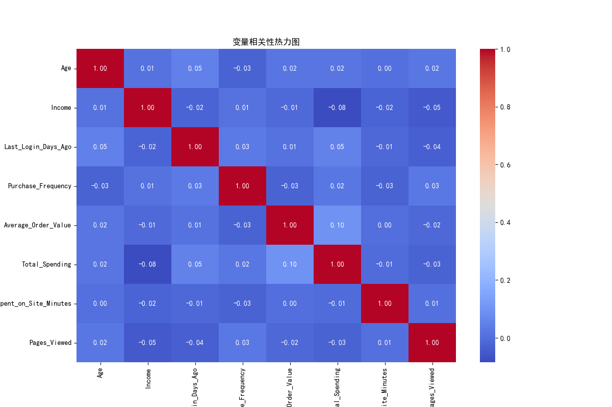
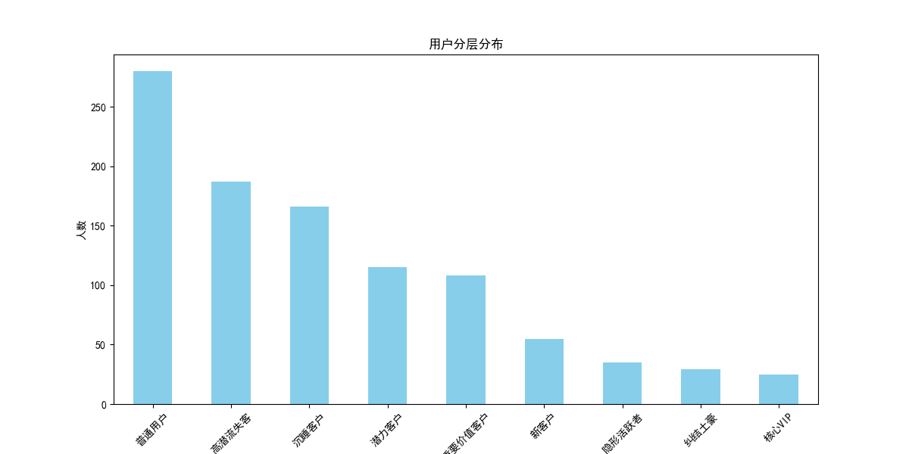

基于RFM模型优化的用户价值评估体系
在电商行业，用户分层是精准营销的基础。运营团队每天面临的核心问题：
传统的RFM模型存在两大缺陷：
import pandas as pd
import numpy as np
import matplotlib.pyplot as plt
import seaborn as sns
from sklearn.preprocessing import MinMaxScaler
plt.rcParams['font.sans-serif'] = ['SimHei']
plt.rcParams['axes.unicode_minus'] = False
df = pd.read_csv('user_personalized_features.csv')| 字段类型 | 字段名称 | 说明 |
|---|---|---|
| 用户画像 | Age, Gender, Location, Income | 基本人口统计信息 |
| 消费数据 | Purchase_Frequency, Total_Spending | 传统RFM指标 |
| 行为数据 | Time_Spent_on_Site_Minutes, Pages_Viewed | 网站访问行为 |
| 其他 | Interests, Newsletter_Subscription | 兴趣爱好与订阅状态 |
numeric_cols = ['Age', 'Income', 'Last_Login_Days_Ago', 'Purchase_Frequency',
'Average_Order_Value', 'Total_Spending', 'Time_Spent_on_Site_Minutes', 'Pages_Viewed']
corr_matrix = df[numeric_cols].corr()
# 高收入群体消费分析
high_income_threshold = df['Income'].quantile(0.75)
high_income_users = df[df['Income'] >= high_income_threshold]
avg_total_spending = df['Total_Spending'].mean()
high_income_below_avg = high_income_users[high_income_users['Total_Spending'] < avg_total_spending].shape[0]衡量用户到底想不想买，将停留时长和浏览页数归一化后加权求和。
scaler = MinMaxScaler(feature_range=(0, 1))
df['Time_Spent_Score'] = scaler.fit_transform(df[['Time_Spent_on_Site_Minutes']])
df['Pages_Viewed_Score'] = scaler.fit_transform(df[['Pages_Viewed']])
df['Intent_Score'] = df['Time_Spent_Score'] * 0.5 + df['Pages_Viewed_Score'] * 0.5计算公式：意向度 = 停留时长得分 × 0.5 + 浏览页数得分 × 0.5
衡量用户的纠结程度，用户看了多少页才会买一次。
df['Conversion_Friction'] = df['Pages_Viewed'] / (df['Purchase_Frequency'] + 1)用行为忠诚替代名义忠诚，结合订阅状态和登录行为。
def calculate_active_connection(row):
subscribed = row['Newsletter_Subscription']
last_login = row['Last_Login_Days_Ago']
if subscribed and last_login <= 7:
return 3 # 高
elif not subscribed and last_login <= 7:
return 2 # 中
else:
return 1 # 低
df['Active_Connection'] = df.apply(calculate_active_connection, axis=1)基于收入分层，作为分层后的修正标签。
income_bins = [0, 40000, 80000, 120000, float('inf')]
income_labels = ['低收入', '中低收入', '中高收入', '高收入']
df['Purchase_Power'] = pd.cut(df['Income'], bins=income_bins, labels=income_labels)# R值：最近一次购买时间（越小越好，所以取反）
df['R_Score'] = pd.qcut(df['Last_Login_Days_Ago'], q=5, labels=[1, 2, 3, 4, 5]).astype(int)
df['R_Score'] = 5 - df['R_Score'] # 转换为：最近登录的得分高
# F值：购买频率
df['F_Score'] = pd.qcut(df['Purchase_Frequency'] + 1, q=5, labels=[1, 2, 3, 4, 5]).astype(int)
# M值：消费金额
df['M_Score'] = pd.qcut(df['Total_Spending'], q=5, labels=[1, 2, 3, 4, 5]).astype(int)
# 综合RFM分数
df['RFM_Score'] = df['R_Score'] + df['F_Score'] + df['M_Score']RFM模型解读：
def segment_user(row):
r, f, m = row['R_Score'], row['F_Score'], row['M_Score']
intent = row['Intent_Score']
purchase_power = row['Purchase_Power']
if r >= 4 and f >= 4 and m >= 4:
return '核心VIP'
elif r >= 3 and f >= 3 and m >= 3:
return '重要价值客户'
elif r >= 3 and f >= 2 and m >= 2:
return '潜力客户'
elif r <= 2 and f >= 3 and m >= 3:
return '高潜流失客'
elif intent >= 0.7 and (purchase_power == '高收入' or purchase_power == '中高收入') and m <= 2:
return '纠结土豪'
elif intent >= 0.7 and (purchase_power == '低收入' or purchase_power == '中低收入') and m <= 2:
return '隐形活跃者'
elif r >= 3 and f <= 2 and m <= 2:
return '新客户'
elif r <= 2 and f <= 2 and m >= 3:
return '沉睡客户'
else:
return '普通用户'
df['User_Segment'] = df.apply(segment_user, axis=1)
| 用户类型 | 人数 | 平均消费 | 平均购买频率 | 平均意向度 | 平均收入 |
|---|---|---|---|---|---|
| 核心VIP | 25 | ¥4,046 | 8.04 | - | ¥67,696 |
| 重要价值客户 | 108 | ¥3,450 | 6.74 | - | ¥86,568 |
| 高潜流失客 | 187 | ¥3,575 | 6.97 | - | ¥80,340 |
| 潜力客户 | 115 | ¥2,265 | 4.81 | - | ¥80,038 |
| 纠结土豪 | 29 | ¥765 | 4.90 | 高 | ¥114,065 |
| 隐形活跃者 | 35 | ¥862 | 3.26 | 高 | ¥47,121 |
| 新客户 | 55 | ¥878 | 1.58 | - | ¥87,805 |
| 沉睡客户 | 166 | ¥3,584 | 1.98 | - | ¥78,739 |
| 普通用户 | 280 | ¥1,623 | 4.19 | - | ¥82,778 |
逻辑：把优惠券发给RFM得分最高的前20%用户
逻辑：核心用户 + 潜力用户（纠结土豪、高潜流失客）
index.html - 报告主页面correlation_heatmap.png - 相关性热力图user_segment_distribution.png - 用户分层分布图Settings → PagesSource 选项中选择 main 分支和 /root 目录Save，等待几分钟后页面会自动部署https://你的用户名.github.io/仓库名/